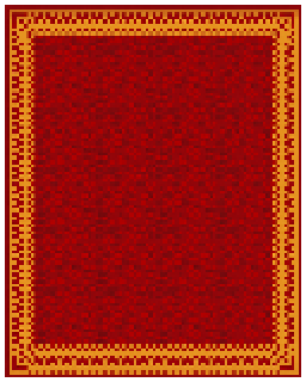
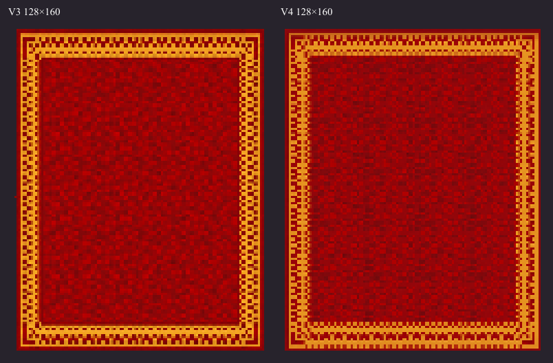
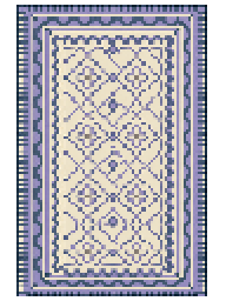
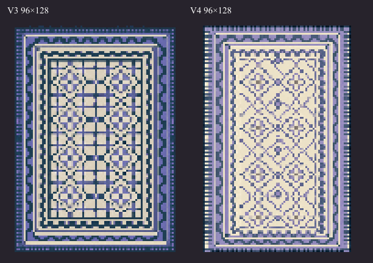
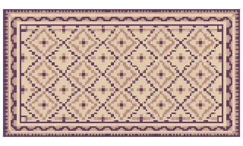
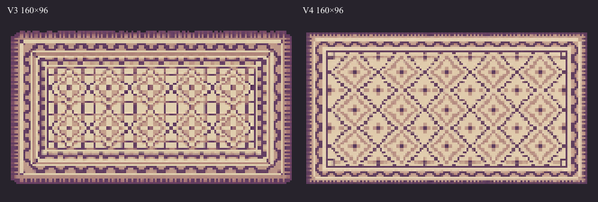
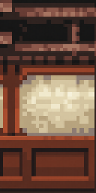
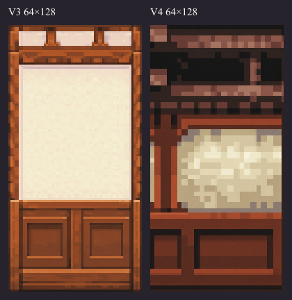
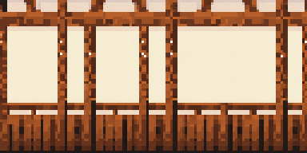
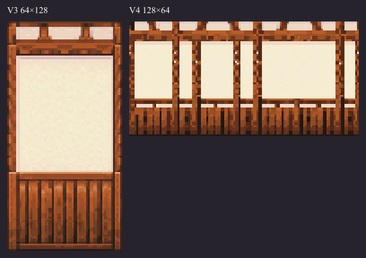

Three complete rugs and two authored wall components. No counters or floors changed. V1/V2/V3 remain intact. Assets only, no integration.
Original FFII PR / V4 boards · Sources and registration · Mechanical checks
128×160 native; 32PPU; logical 128×160 pixels at32PPU. Complete authored component; no seam/repeat contract.
Native PNG

96×128 native; 32PPU; logical 96×128 pixels at32PPU. Complete authored component; no seam/repeat contract.
Native PNG

160×96 native; 32PPU; logical 160×96 pixels at32PPU. Complete authored component; no seam/repeat contract.
Native PNG

64×128 native; 64PPU; logical 32×64 pixels at32PPU. Complete authored component; no seam/repeat contract.
Native PNG

128×64 native; 64PPU; logical 64×32 pixels at32PPU. Complete authored component; no seam/repeat contract.
Native PNG

No new seamlessness, nine-slice, collision, traversal, Unity import, runtime or retail1:1 claim. Original reference screenshots inform art direction and appear only on comparison boards, never in production PNGs.